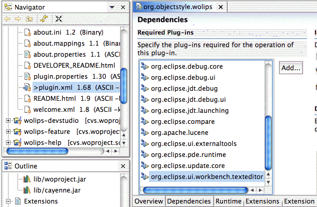

Working with WOLips in the PDE
This document is a short brief on how to check out WOLips within Eclipse and set up all things required to develop for it.
- Make sure that you can use the pde classpath container.

- Enable all plugins for the pde.

- Add the woproject repository in the cvs view.
- Check out woproject as project.
- Check out all folders in the src folder starts with wolips including the folder wolips with the command check out as not as project.

- After this step there will be lot of errors in the task view. Open the plugin.xml file in the wolips project and add a plugin to the list of plugins.

- Replace the files plugin.xml and .classpath with the latest from the repository.

- Build woproject with ant on the commandline.
- Add cayenne.jar, log4j-1.2beta4.jar and woproject.jar from the woproject
distribution to the wolips/lib folder.
- Refresh the wolips project.
- Rebuild all projects
You should now be able to run it as a Runtime Workbench.